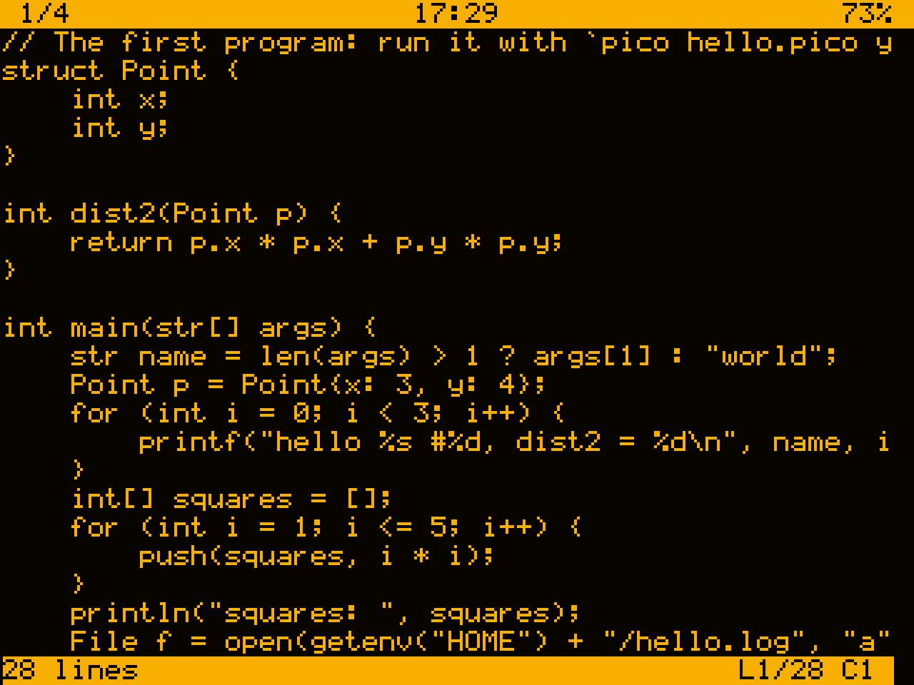
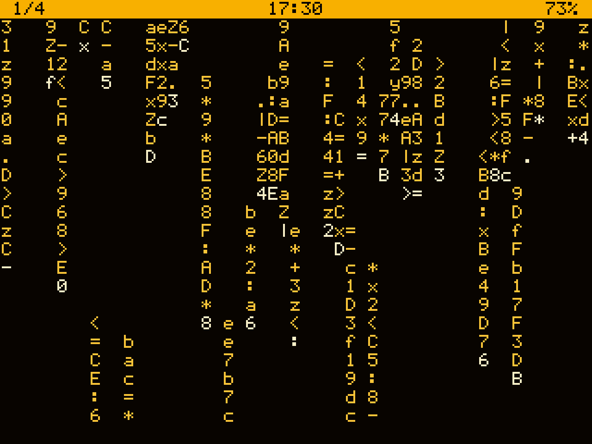
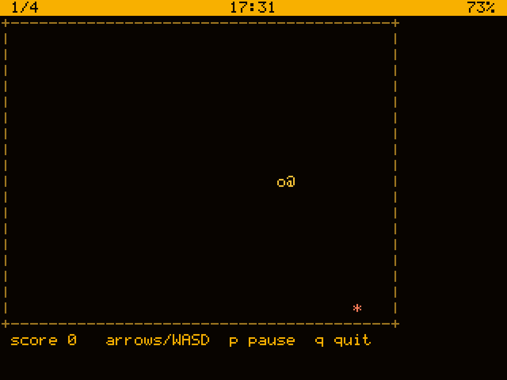

edit and run it with pico. The programs of part 2
are in ~/pico, to read and change. man pico is the
short reference on the machine.
int main() { println("hello, pocket"); return 0; }
Write it with edit hello.pico, then Fn S
to save and Fn Q to leave, and run it:
$ pico hello.pico hello, pocket
pico compiles and runs in one go. picoc hello.pico
makes a program of it, ./hello, that starts faster.
Every program has a main. What it returns is its exit status:
0 means all went well. main can have the words typed after the
name:
int main(str[] args) { str who = len(args) > 1 ? args[1] : "you"; println("hello, ", who); return 0; }
$ pico hello.pico andre hello, andre
Every variable has a type, and says it:
int count = 3; // whole numbers float price = 2.50; // with a point bool done = false; // true or false str name = "Ada"; // text const int SIZE = 10; // never changes
println("count is ", count); printf("%s: %d at %.2f\n", name, count, price);
Nothing changes type by itself (except an int where a float is wanted):
+ - * / % as usual; x += 2, x++;
7 / 2 is 3, 7.0 / 2 is 3.5. random(6)
is 0 to 5, sqrt, pow, sin, abs,
min, max.
if (count > 5) { println("many"); } else if (count > 0) { println("some"); } else { println("none"); }
A condition is a bool: if (n != 0), never if (n).
&& and, || or, ! not.
while (lives > 0) { ... } for (int i = 0; i < 10; i++) { ... }
str[] fruit = ["apple", "fig", "kiwi"]; for (str f in fruit) println("I like ", f);
for ... in cannot go past the end. For a text's letters:
for (str ch in chars(s)).
break leaves a loop; continue goes on with the next
time round.
When one value decides between many things:
switch (key) { case 'q', KEY_ESC: running = false; case KEY_UP: y--; default: beeps++; }
Only the case that matches runs — nothing falls through into the
next one, as it does in C. A case can list several values; they can be
numbers, text or enum values. default comes last.
Names for a handful of choices:
enum Dir { UP, DOWN, LEFT, RIGHT } Dir d = LEFT; switch (d) { case UP, DOWN: println("up or down"); default: println("sideways"); }
Enum values are ints: UP is 0, DOWN 1, and LEFT = 10
sets one.
int square(int n) { return n * n; } void greet(str who, int times) { for (int i = 0; i < times; i++) println("hi ", who); }
A function can be used above where it is written. One that returns something must return on every path: the compiler checks.
int[] scores = [12, 7, 30]; push(scores, 18); // [12, 7, 30, 18] sort(scores); // [7, 12, 18, 30] int best = scores[len(scores) - 1]; int last = pop(scores); // takes it off int[][] grid = [[1, 2], [3, 4]];
Also insert, remove_at, slice,
reverse, find. A wrong index stops the program and
says where.
str line = " the quick brown fox "; str[] words = split(trim(line)); println(join(words, "-")); // the-quick-brown-fox println(upper("hey"), find("hello", "ll"));
Also substr, replace, contains,
starts_with, repeat, chars. s[i]
is the byte at i, as a number.
struct Player { str name; int x; int lives; } Player p = Player{name: "ada", x: 1, lives: 3}; p.x += 2; println(p); // Player{name: "ada", x: 3, lives: 3}
Structs, lists and text are passed by reference: a function that gets a Player changes that same Player.
File f = open("notes.txt", "w"); write(f, "a line\n"); close(f); str all = read(open("notes.txt", "r"));

The screen is 53 columns by 23 rows (term_cols(),
term_rows()). Colours and the cursor are escape codes, which are
plain text:
A game needs each key the moment it is pressed: raw_mode(true).
readkey(100) waits at most 100 ms and gives KEY_NONE
if nothing came, so the game moves on regardless.
int x = 10; raw_mode(true); print("\e[2J\e[?25l"); for (;;) { printf("\e[10;%dH o ", x); int key = readkey(100); if (key == 'q') break; if (key == KEY_LEFT) x--; if (key == KEY_RIGHT) x++; } print("\e[?25h"); raw_mode(false);
Also KEY_UP, KEY_DOWN, KEY_ESC; Enter comes as '\r'.

pico ~/pico/snake.pico: the whole game is a loop that reads
a key, moves, and draws only what changed. In outline:
while (!over) { int key = readkey(delay); dir = steer(key, dir); Point next = ahead(snake[0], dir); if (hits(next)) over = true; insert(snake, 0, next); // the new head if (at(next, food)) grow(); else erase(pop(snake)); // the tail }
Steering is a switch over the keys, and an enum names the way it goes:
Dir steer(int key, Dir now) { switch (key) { case KEY_UP, 'w': return UP; ... default: return now; } }
pico ~/pico/matrix.pico: a drop for each column falls, a
bright head writing new glyphs, a trail fading behind it. In outline:
struct Drop { int y; int len; int speed; } for (;;) { str frame = ""; for (int x = 0; x < cols; x++) { Drop d = drops[x]; d.y++; frame += at(d.y, x) + HEAD + glyph(); frame += at(d.y - 1, x) + GREEN + glyph(); frame += at(d.y - d.len, x) + " "; if (d.y - d.len >= rows) drops[x] = new_drop(); } print(frame); if (readkey(50) == 'q') break; }
The trick of any fast screen: build the frame as one text, write it once, and write only the cells that change.
life.pico (Conway's life) and mandel.pico
(a Mandelbrot zoom) are next to it.
With Wi-Fi on, http_get(url) fetches what an address answers,
as text ("" if it fails). Web APIs answer in JSON, and
json_get(text, path) picks one value out of it:
str j = http_get("https://api.open-meteo.com/" + "v1/forecast?latitude=41.9&longitude=12.5" + "¤t=temperature_2m"); println(json_get(j, "current.temperature_2m"));
A path is names and numbers joined by dots: for
{"list": [{"name": "a"}]}, "list.0.name" is
a and "list.#" counts the list.
$ pico ~/pico/weather.pico Roma Roma, Italia 25.4 C, clear humidity 50%, wind 11.9 km/h
output("date") runs a command and gives back what it printed;
run("play", "x.mp3") runs one and lets it print.
str[] songs = split(output("ls", "/home/user/music"));
The compiler says where, and often what to do:
hello.pico:4:13: error: expected int, got str;
parse it with to_int(s)
int n = "12";
^
A mistake while it runs stops the program with the line, and how it got there; nothing else is harmed:
list.pico:6: runtime error: index 9 out of
range (length 3)
in main (list.pico:6)
Start from a program in ~/pico and change it. Keep
functions short. Test on the PC too: make -C lang builds the same
pico there. docs/PICO-TUTORIAL.md and
docs/LANGUAGE.md have the rest.
int float bool str T[] File void
struct S { int a; } enum E { A, B }
const int N = 3; int[] a = [1, 2];
if else while for (;;) for (T x in a)
switch case default break continue return
? : && || ! + - * / % == != < <=
pico f.pico runs,
picoc f.pico compiles, man pico reminds.
In ~/pico on the machine, to run, read and take apart:
pico weather.pico TokyoA clock in big digits. A dice roller. Flash cards from a file in
~/notes. The day's news headlines from a JSON feed. A
pomodoro timer that runs beep with run(). A
maze. A calculator.
man pico on the machine; on the PC,
docs/PICO-TUTORIAL.md to learn and docs/LANGUAGE.md
for all of it: every built-in, the limits, how the compiler works.
picoc snake.pico, put
snake in ~/bin, and snake is a command.